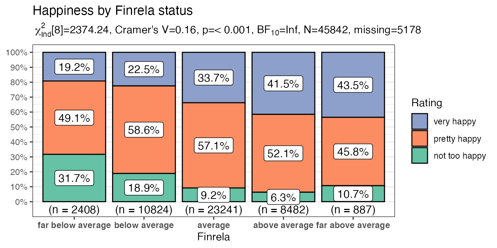

Using PlotXTabs2
Chuck Powell
2020-01-28
Source:vignettes/Using-PlotXTabs2.Rmd
Using-PlotXTabs2.RmdLike PlotXTabs this function is designed to automate and make efficient a relatively common task in some branches of science. The task of cross tabulating and displaying certain nominal and ordinal variables. It makes use of the tidyverse and to achieve those ends and is optimized to work with purrr.
Imagine that you want to take two of the mtcars variables, for example am and cyl, and conduct a cross tabulation, get some basic statistics about whether they are “independent” and then plot it. Since it’s the sort of thing I’m likely to do often seemed like a good candidate for a function. The function should allow us to efficiently repeat across more than two variables at a time. It would be very tedious to execute the command 25 times if I had 1 dependent variables and 25 independent variables.
It provides visually appealing and sensibly labelled charts quickly and efficiently. It does some basic error checking and allows the user some choice as to exact style without having to know any underlying syntax or semantics.
# simplest possible call with the defaults
PlotXTabs2(
data = mtcars,
y = am,
x = cyl
) 
Important considerations
- The variables may be
bareor quoted text. - By default a simple summary of key frequentist and bayesian information is supplied but this subtitle can be suppressed.
- Thanks to
ggstatsplotthere are a plethora of formatting options.
To demonstrate just a few…
# more complex call
PlotXTabs2(
data = datasets::mtcars,
y = am,
x = cyl,
bf.details = TRUE,
xlab = "Number of cylinders",
ylab = NULL,
data.label = "both",
label.fill.alpha = .3,
labels.legend = c("0 = Manual", "1 = Automatic"),
legend.title = "Transmission Type",
legend.position = "left",
title = "The perenial mtcars example",
palette = "Pastel1"
)
Example scenario … What makes us happy?
The documentation examples use the mtcars and HairEyeColor built-in datasets. They are handy, convenient, and available by default. To demonstrate the function in action, however, I’m going to use a different dataset. Something that should allow you to better see the value of making plots of the crosstabs rather than simple tables. It also has the happy property of being much much larger than mtcars so we can see if there are lags in performance due to the number of rows.
Rather than provide my own or make anyone work too hard I selected that happy dataset that comes bundled with several R packages including productplots and GGally. From the description:
The data is a small sample of variables related to happiness from the general social survey (GSS). The GSS is a yearly cross-sectional survey of Americans, run from 1976. We combine data for 25 years to yield 51,020 observations, and of the over 5,000 variables, we select nine related to happiness.
We’ll load the library and take a quick look at the structure of the data.
library(dplyr)
#>
#> Attaching package: 'dplyr'
#> The following objects are masked from 'package:stats':
#>
#> filter, lag
#> The following objects are masked from 'package:base':
#>
#> intersect, setdiff, setequal, union
library(purrr)
library(productplots)
str(happy)
#> 'data.frame': 51020 obs. of 10 variables:
#> $ id : num 1 2 3 4 5 6 7 8 9 10 ...
#> $ happy : Factor w/ 3 levels "not too happy",..: 1 1 2 1 2 2 1 1 2 2 ...
#> $ year : num 1972 1972 1972 1972 1972 ...
#> $ age : num 23 70 48 27 61 26 28 27 21 30 ...
#> $ sex : Factor w/ 2 levels "male","female": 2 1 2 2 2 1 1 1 2 2 ...
#> $ marital: Factor w/ 5 levels "married","never married",..: 2 1 1 1 1 2 3 2 2 1 ...
#> $ degree : Factor w/ 5 levels "lt high school",..: 4 1 2 4 2 2 2 4 2 2 ...
#> $ finrela: Factor w/ 5 levels "far below average",..: 3 4 3 3 4 4 4 3 3 2 ...
#> $ health : Factor w/ 4 levels "poor","fair",..: 3 2 4 3 3 3 4 3 4 2 ...
#> $ wtssall: num 0.445 0.889 0.889 0.889 0.889 ...We’ll be focusing on the non numeric variables. I certainly can’t claim to do a detailed analysis here but at least the questions will be fun I hope… Here’s the shortest possible call.
# who's happier by gender
PlotXTabs2(happy,happy,sex)
That’s useful, especially when you consider the variety of formatting options, but far more useful in my work flows when we make use of purrr map operators.
myvariables <- happy %>%
select_if(is.factor) %>%
select(-happy) %>%
names
mytitles <- stringr::str_c("Happiness by ", stringr::str_to_title(myvariables), " status")
myvariables
#> [1] "sex" "marital" "degree" "finrela" "health"
mytitles
#> [1] "Happiness by Sex status" "Happiness by Marital status"
#> [3] "Happiness by Degree status" "Happiness by Finrela status"
#> [5] "Happiness by Health status"
purrr::map2(.x = myvariables,
.y = mytitles,
.f = ~ PlotXTabs2(x = .x,
title = .y,
data = happy,
y = happy,
legend.title = "Rating",
xlab = stringr::str_to_title(.x),
ylab = NULL,
perc.k = 1,
palette = "Set2"
)
)
#> Note: Using an external vector in selections is ambiguous.
#> ℹ Use `all_of(.x)` instead of `.x` to silence this message.
#> ℹ See <https://tidyselect.r-lib.org/reference/faq-external-vector.html>.
#> This message is displayed once per session.
#> [[1]]
#>
#> [[2]]
#>
#> [[3]]
#>
#> [[4]]
#>
#> [[5]]
I hope you’ve found this useful. I am always open to comments, corrections and suggestions.
Chuck (ibecav at gmail dot com)
License

This work is licensed under a Creative Commons Attribution-ShareAlike 4.0 International License.
“He who gives up [code] safety for [code] speed deserves neither.” (via)